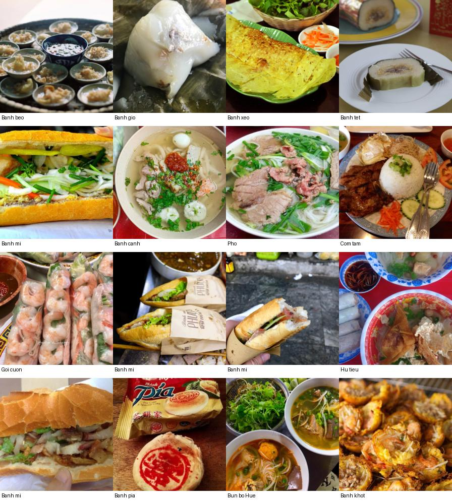
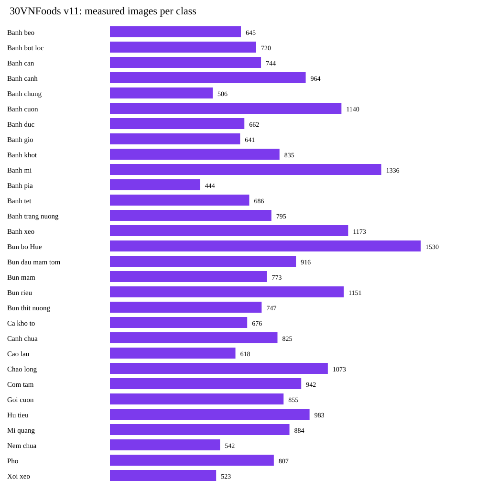
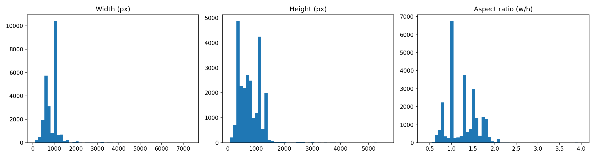
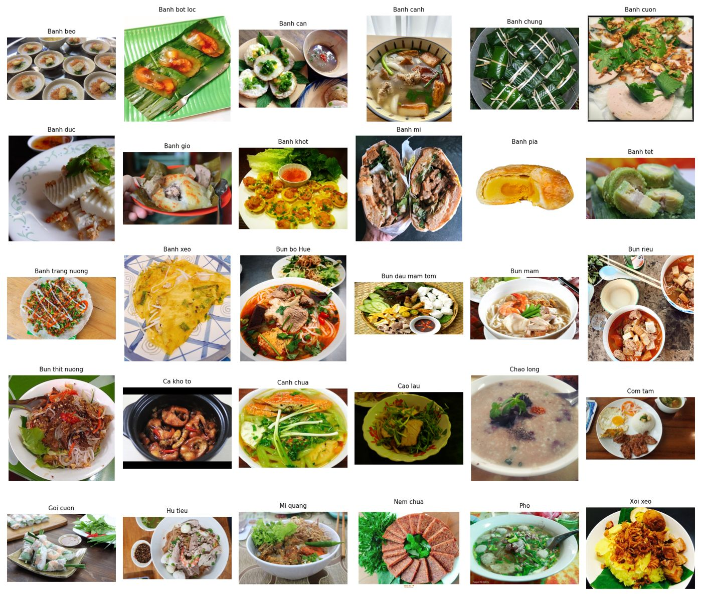
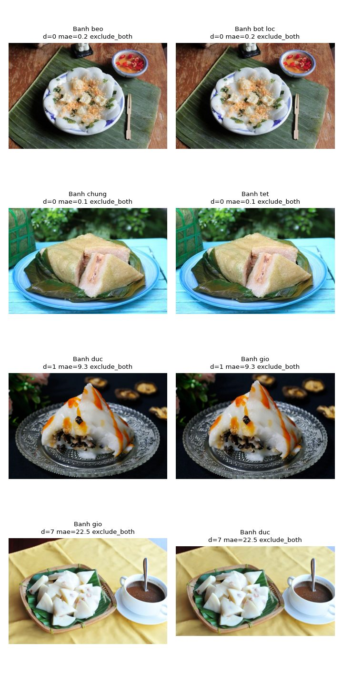
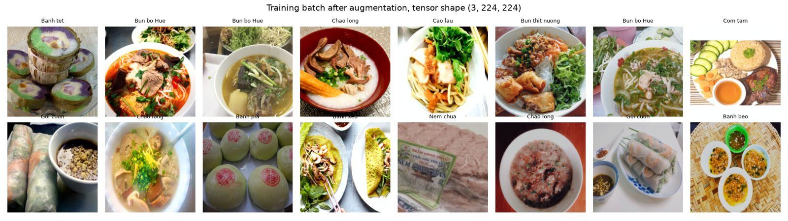
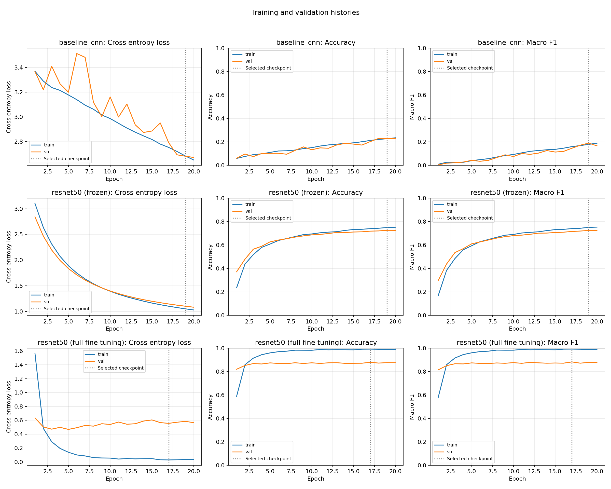
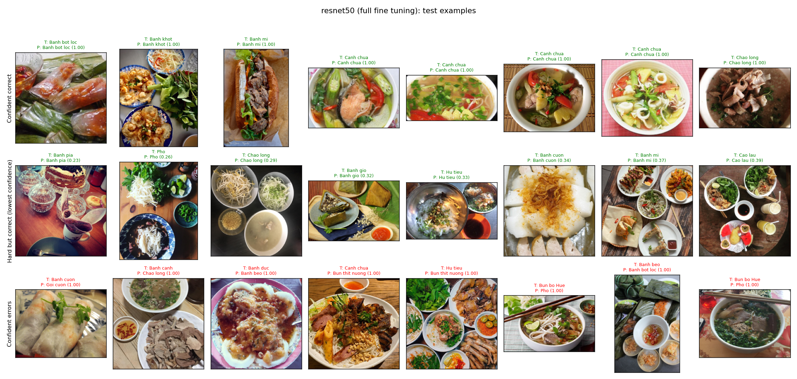
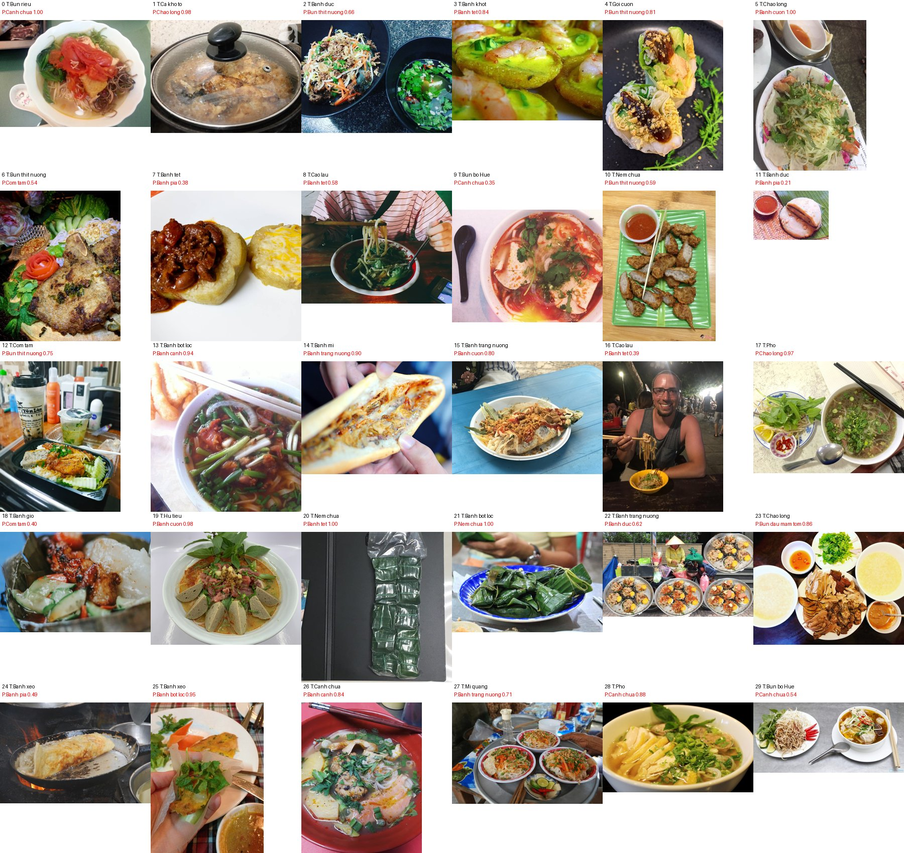

Deep Learning on Large-Scale Data and Specialized Tasks
Deep Learning on Large-Scale Data for Specialized Computer Vision or Language Tasks.
The task is image classification on 30VNFoods, a 30-class Vietnamese food dataset. A simple CNN trained from scratch is compared with a pretrained ResNet-50, followed by a controlled experiment on a frozen versus a fully fine-tuned backbone. This page presents the dataset proposal and audit, methodology, quantitative and qualitative results, error analysis, compute cost, checkpoint access, and the report, slides, and video deliverables.
The M2 draft submitted on 26 Oct 2026 is kept as it was. Archived copies are available as the submitted page and its GitHub release.
Assignment Information
Group Members
| # | Full Name | Student ID | Role | GitHub |
|---|---|---|---|---|
| 1 | Hoang Kim Cuong | 2352145 | Responsible for models, training & checkpoints, metrics, and error analysis | @DiamondHoang |
| 2 | Phan Tan Loc | 2352712 | Responsible for dataset audit, splitting, DataLoader, and EDA | @cspaull |
| 3 | Tran Manh Thang | 2353124 | Responsible for environment & configs, training runner, integration, and comparison | @Winuim12 |
Dataset Proposal
30VNFoods
The task is Vietnamese food recognition across 30 categories, which include similar dishes, varied preparation, cluttered backgrounds and changing lighting.

Dataset Name, Source, Version, and License
30VNFoods
Vietnamese Foods Image Dataset
- Source
- View dataset on Kaggle ↗
- Dataset version
- Kaggle version 11This version is used for the project.
- Data checked
- 03 Oct 2026The dataset audit was performed on this date.
- License
- CC BY-NC-SA 4.0As listed on the Kaggle dataset page. The downloaded package also includes an MIT LICENSE file.Dataset license on Kaggle ↗
Task, Input, and Output Definitions
Each image is resized and cropped to the standard resolution.
The model recognizes the Vietnamese dish in each image.
The highest-scoring class is the prediction.
Number of Samples and Annotation Types
The original dataset spans 30 Vietnamese food classes. Each image is one sample.
Each image is labeled with one of 30 food names, such as Pho or Banh mi. Images are grouped into folders named after the food; the folder name is used as the label.
Preliminary Distribution Analysis

Bun bo Hue has the most images (1,530), while Banh pia has the fewest (444). The ratio is 1,530 / 444 ≈ 3.45.
Median width is 1,000 pixels and median height is 720 pixels. Widths range from 100 to 7,360 pixels; heights range from 83 to 5,616 pixels. These are separate width and height statistics, rather than a single shared resolution.
Data-Splitting Plan
A class-stratified 70% / 15% / 15% split is proposed after cleaning, with seed = 42. All 30 classes are retained.
Split Unit Used to Prevent Leakage
- Exact copiesOne copy is kept when identical images share a label. Identical images with conflicting labels are excluded pending manual review.
- Similar images togetherThe provisional split keeps automatically flagged near-duplicate candidates in the same set. These candidates and source identities are reviewed before the split is finalized.
- No overlapThis reduces the chance that the model is evaluated on a copy of a training image. Augmentation and any dataset-derived normalization statistics use training data only.
Evaluation Metrics
F1 is computed per food class, then averaged across all 30 classes. Each class has equal weight, including those with fewer images.
Accuracy measures the proportion of correctly classified images. Precision, recall, and F1 are also reported for each food class.
A 30 × 30 matrix shows the true and predicted food classes, revealing which dishes the model commonly confuses.
Baseline Plan
The model starts from randomly initialized weights. This simple model provides a reference for comparison with the pretrained model.
Each image produces 30 class scores. The class with the highest score is the predicted food name.
The model trains for up to 20 epochs on the same data split as the pretrained model for a fair comparison.
The checkpoint with the highest validation Macro-F1 is retained. Test Accuracy and Macro-F1 are reported with per-class scores and a confusion matrix.
Planned Pretrained Models
The following candidates are under consideration; the final model has not been selected.
- EfficientNet-B0
- ResNet-50
- ConvNeXt-Tiny
- ViT-B/16
- MobileNetV3-Large
Compute Estimate
Experiments are planned to run on available local hardware or a cloud GPU environment. Compute requirements will depend on the selected model and training configuration. Training time, memory usage, and storage needs will be estimated through a short trial run before the main experiments.
Problem Statement
Assignment 2 carries the pipeline from Assignment 1 to a larger and more specialized problem. The track covers a simple baseline, a pretrained model with a documented fine-tuning protocol, a controlled experiment, quantitative and qualitative evaluation, error analysis, and a compute-cost analysis.
Real-world motivation
Many apps need to know which dish is in a photo, without asking the user to type its name:
- Food delivery and review apps. These apps tag every uploaded photo with its dish name, so a search for bún bò Huế finds the right photos and restaurants.
- Nutrition and calorie tracking. The app recognises the dish from a photo of the meal and suggests its calories instead of asking the user to look it up.
- Search by photo. A picture of a dish is enough to find its recipe or a nearby place that serves it.
General models do not solve this out of the box: ImageNet has no Vietnamese dish classes, many dishes look alike in a bowl, and the same dish varies by region, vendor and plating. Recognising 30 common dishes from a single photo is the first building block for these apps.
Task formulation
- Task
- The task is single-label, multi-class image classification.
- Prediction unit
- Each photograph receives exactly one dish label.
- Input
- Each input is an RGB food photo, resized and center-cropped to 224 × 224 and normalised with ImageNet statistics.
- Output
- The model outputs 30 raw logits, and the largest one gives the predicted dish.
- Data
- 30VNFoods contains 24,982 images after cleaning, split 70/15/15 by duplicate group.
- Metrics
- Macro-F1 is the primary metric because classes are imbalanced; accuracy is also reported.
- \(\mathcal{D}, N\)
- dataset, number of samples
- \(\mathbf{x}_i, y_i\)
- image \(i\) and its class index
- \(K\)
- number of classes (30)
- \(f_{\boldsymbol{\theta}}, \boldsymbol{\theta}\)
- model, learnable parameters
- \(\mathbf{z}, z_k\)
- logits, score of class \(k\)
- \(\hat{p}_k\)
- probability of class \(k\)
- \(\hat{y}\)
- predicted class
- \(\mathbf{y}, y_k\)
- one-hot label, its entry \(k\)
- \(\hat{p}_y\)
- probability of the true class
- \(\mathcal{L}_{\text{CE}}\)
- cross-entropy loss
- \(\mathbf{X}, \mathbf{Y}\)
- batch of inputs, labels
- \(\boldsymbol{\theta}^{*}\)
- parameters with the lowest loss
- \(\text{F1}_k\)
- F1 score of class \(k\)
- Precision, Recall
- computed per class
Label space
The 30 classes below are grouped by how they look on the plate. The groups show where visual overlap is expected; the model never sees them and treats all 30 classes as independent.
- Phở
- Bún bò Huế
- Bún riêu
- Bún mắm
- Hủ tiếu
- Bánh canh
- Mì Quảng
- Cao lầu
- Bún thịt nướng
- Bún đậu mắm tôm
- Bánh chưng
- Bánh tét
- Bánh giò
- Bánh bột lọc
- Bánh đúc
- Bánh bèo
- Bánh cuốn
- Bánh xèo
- Bánh khọt
- Bánh căn
- Bánh tráng nướng
- Cơm tấm
- Xôi xéo
- Cháo lòng
- Bánh mì
- Bánh pía
- Gỏi cuốn
- Nem chua
- Cá kho tộ
- Canh chua
Research questions
Experiment A: baseline versus pretrained
Does an ImageNet-pretrained ResNet-50 beat a CNN trained from scratch on about 17,500 training images?
Experiment B: frozen versus full fine-tuning
With everything else fixed, does updating the whole backbone improve validation Macro-F1 by at least 0.01 over a frozen backbone, and is the extra cost worth it?
Main difficulties
- Fine-grained classes. Several noodle soups share a broth, herbs and bowl shape, and steamed cakes wrapped in banana leaves look alike from outside.
- Large variation within a class. The same dish changes with region, vendor, portion, plating, camera angle and lighting.
- Background clutter. Photos often show side dishes, hands, tables or several dishes at once, although each image has one label.
- Class imbalance. Classes range from 444 to 1,530 images, so accuracy alone would reward the frequent dishes.
- Web-collected data. Exact and near duplicates, some filed under two classes, had to be removed or grouped before splitting to avoid leakage.
- Compute budget. Every run must fit a single GPU session, so training time and inference cost are reported alongside accuracy.
Learning objectives
- Propose, justify, and obtain approval for a dataset and task protocol suitable for specialized deep learning work.
- Adapt an end-to-end pipeline to larger-scale data and task-specific annotations/metrics.
- Compare a simple baseline with at least one pretrained or modern model under a documented fine-tuning strategy.
- Design and interpret at least one controlled ablation or factor experiment.
- Analyze errors, compute cost, and reproducibility for a specialized computer vision or language task.
Dataset Description & EDA
Dataset description
- Source
- 30VNFoods on Kaggle is published by Quan Dang.
- Version
- Kaggle v11 was audited on 03 Oct 2026.
- License
- The license is CC BY-NC-SA 4.0. The archive also has an MIT file; the stricter terms apply and the data is not redistributed.
- Approval
- Approved The approval is shown in the Dataset Proposal; its date and conditions are still to be recorded.
- Collection
- Images were scraped from the web, and source URLs are listed per class in the archive.
- Annotation
- Each image has one dish label, taken from its folder name, across 30 classes.
- Official split
- The official split has 17,581 train, 2,515 validation and 5,040 test images (70 / 10 / 20).
- Storage
- The zip is 4.48 GB, with a median file size of 127 KB.
- Formats
- All files are named
.jpg, but the actual formats are 24,854 JPEG, 119 PNG, 7 MPO and 2 BMP, all in RGB. Files are opened by content.
Data quality audit
| Step | Images |
|---|---|
| The archive contains these images, and none are unreadable. | 25,136 |
| One copy is kept for exact copies (SHA-256) with the same label. | −25 |
| All exact copies with conflicting labels are removed. | −79 |
| Near copies with conflicting labels are removed after review (25 pairs). | −50 |
| Retained | 24,982 |
Exploratory analysis
| Dish | Bar | Train | Val | Test | Total |
|---|---|---|---|---|---|
| Bún bò Huế | 1,061 | 228 | 228 | 1,517 | |
| Bánh mì | 935 | 200 | 200 | 1,335 | |
| Bánh xèo | 819 | 176 | 176 | 1,171 | |
| Bún riêu | 798 | 171 | 171 | 1,140 | |
| Bánh cuốn | 794 | 170 | 170 | 1,134 | |
| Cháo lòng | 749 | 161 | 161 | 1,071 | |
| Hủ tiếu | 683 | 146 | 146 | 975 | |
| Bánh canh | 669 | 143 | 143 | 955 | |
| Cơm tấm | 658 | 141 | 141 | 940 | |
| Bún đậu mắm tôm | 642 | 137 | 137 | 916 | |
| Mì Quảng | 611 | 132 | 131 | 874 | |
| Gỏi cuốn | 595 | 128 | 128 | 851 | |
| Bánh khọt | 578 | 125 | 124 | 827 | |
| Canh chua | 576 | 123 | 123 | 822 | |
| Phở | 560 | 120 | 120 | 800 | |
| Bánh tráng nướng | 556 | 119 | 119 | 794 | |
| Bún mắm | 538 | 116 | 116 | 770 | |
| Bún thịt nướng | 522 | 112 | 112 | 746 | |
| Bánh căn | 514 | 110 | 110 | 734 | |
| Bánh bột lọc | 499 | 107 | 107 | 713 | |
| Bánh tét | 477 | 102 | 102 | 681 | |
| Cá kho tộ | 472 | 101 | 101 | 674 | |
| Bánh đúc | 456 | 98 | 98 | 652 | |
| Bánh bèo | 447 | 96 | 96 | 639 | |
| Bánh giò | 441 | 95 | 95 | 631 | |
| Cao lầu | 432 | 92 | 92 | 616 | |
| Nem chua | 378 | 81 | 81 | 540 | |
| Xôi xéo | 367 | 78 | 78 | 523 | |
| Bánh chưng | 350 | 75 | 75 | 500 | |
| Bánh pía | 309 | 66 | 66 | 441 | |
| All classes | 17,486 | 3,749 | 3,747 | 24,982 |
Imbalance
- Max / min
- 1,517 / 441 = 3.44×
- Mean, median
- The mean is 833 and the median is 797 per class (CV 0.30).
- Entropy
- Entropy reaches 0.988 of the balanced maximum.
- Top / bottom 5
- The top 5 classes hold 25.2% of images and the bottom 5 hold 10.5%.
The imbalance is moderate, but it is enough that accuracy favours the large classes, so Macro-F1 is primary. The smallest test class has 66 images: one error moves its recall by 1.5 points. No run uses class weights or resampling.
Input size
- Median
- The median size is 1,000 × 720 px, with a 4:3 aspect ratio.
- Range
- Widths range from 100 to 7,360 px and heights from 83 to 5,616 px.
- Orientation
- There are 14,180 landscape, 6,874 square and 3,928 portrait images.
- Short side < 224
- 346 images (1.4%) fall below 224 px and are upscaled.
Sizes span two orders of magnitude, so all images are resized and cropped to 224 × 224.

Representative samples


Data splitting
- Split
- A custom 70 / 15 / 15 split is stratified per class; per-class counts are in the table above.
- Why custom
- 197 duplicate groups and 40 identical files crossed the official folders.
- Split unit
- The split unit is the duplicate group, so all copies go to one split.
- Seed
42- Subset rules
- No subset rules apply; all 30 classes and all 24,982 images are used.
- Leakage check
- No IDs, groups or SHA-256 hashes are shared across splits.
- Use
- Validation picks the checkpoint (best Macro-F1), and test is evaluated once.
How duplicate groups are built
- Candidates: 64-bit dHash with Hamming distance ≤ 8 yields 1,718 candidate pairs.
- Confirm: a candidate is confirmed when the 32 × 32 grayscale thumbnail difference is ≤ 30 / 255. Without it, similar plate layouts chained into groups of 250+ images; with it the largest group is 9.
- Group: 480 same-label pairs form 412 groups.
- Review conflicts: of 54 cross-label pairs, 25 were one picture under two dishes (both removed) and 29 were different dishes (kept).
- Assign: within each class, groups are shuffled with seed 42, test is filled to ~15%, then validation to ~15%, and the rest goes to train.
Preprocessing
| Applies to | Transforms |
|---|---|
| Labels | Folder names are mapped to 0–29 alphabetically (class_to_idx.json). |
| Train | RandomResizedCrop(224, scale 0.7–1.0), HorizontalFlip, ColorJitter(0.2, 0.2, 0.2) |
| Val / test | Resize(232), CenterCrop(224), as in TorchVision ResNet50_Weights.IMAGENET1K_V2 |
| All splits | RGB, ToTensor, Normalize with ImageNet mean / std; no statistics are computed from val or test. |
| Tensors | Images [B, 3, 224, 224] float32, labels [B] int64, output [B, 30]; B = 64 |

Bias and limitations
- Source skew: nearly half the URLs are Instagram, Facebook or Foody reviews, so styled photos outnumber everyday snapshots.
- Label noise: only conflicts between near-identical images were found; wrong labels on unique images remain.
- Lookalikes: Bánh đúc vs Bánh giò, Bún riêu vs Bún mắm are hard even for people.
- Residual leakage: heavily cropped or re-photographed copies escape the hash checks.
- Coverage: only 30 dishes are covered, so any other dish is forced into one of them.
- License: the data may be used for non-commercial purposes only.
Full notebook: 01_eda.html
Methodology
Pipeline
- DataAudited manifests define the train, val and test sets.
- PreprocessingTransforms are listed in EDA.
- ModelA scratch CNN or ResNet-50 produces logits.
- LossCross-entropy is used without class weights or label smoothing.
- OptimizationAdam updates the weights, with optional mixed precision.
- PredictionThe arg-max logit is mapped to a dish name.
- EvaluationMetrics are defined in Problem Statement.
Models
| Scratch CNN (baseline) | Frozen ResNet-50 | Fully fine-tuned ResNet-50 | |
|---|---|---|---|
| Architecture | 33 plain convolutions in 5 stages (64–512 channels) use BatchNorm + ReLU and stride-2 downsampling to 7 × 7, followed by global average pooling and a 512 → 256 → 30 head. | Bottleneck residual blocks feed global average pooling, and the ImageNet head is replaced by Linear(2048, 30). | |
| Initialization | Random | The backbone loads IMAGENET1K_V2 weights, and the head starts random. | |
| Trained part | All layers | Head only | All layers |
| Total parameters | 21,249,886 | 23,569,502 | 23,569,502 |
| Trained parameters | 21,249,886 | 61,470 | 23,569,502 |
| Strengths | It uses no external data and isolates what the training set alone provides. | It has the lowest training cost and a low overfitting risk. | Features adapt to the food domain. |
| Limits | Without residual connections, a deep plain stack is hard to optimize. | Features stay fixed to ImageNet, which lacks Vietnamese dishes. | It trains 383× more parameters than the frozen model, raising memory, time and overfitting risk. |
Fine-tuning procedure
- Frozen: the backbone is set to
requires_grad = Falseand kept in eval mode, so BatchNorm statistics remain fixed. Full: all layers are trainable, and BatchNorm statistics are updated. - Adam receives only trainable parameters at learning rate 10−4, ten times lower than the scratch CNN, to limit early drift from pretrained weights; a single rate is used without warm-up.
- Data, augmentation and epoch budget match the baseline; the epoch with the highest validation Macro-F1 is retained.
Implementation and libraries
- Project code
- The project implements the data audit and split, dataset class, scratch CNN, ResNet-50 wrapper, training loop (mixed precision, early stopping, resume), checkpointing, evaluation and plots.
- PyTorch
- PyTorch provides layers, Adam, cross-entropy,
autocast/GradScalerand DataLoader. - TorchVision
- TorchVision provides ResNet-50 weights and image transforms.
- scikit-learn
- scikit-learn computes accuracy, precision, recall, F1 and the confusion matrix.
- Pillow, NumPy
- Pillow and NumPy handle image decoding, hashing and array operations.
Experimental Setup
Experimental design
| Item | A: baseline vs pretrained | B: frozen vs full fine-tuning (ablation) |
|---|---|---|
| Hypothesis | ImageNet pretraining beats training from scratch. | Updating the backbone beats training the head alone. |
| Changed factor | Model and initialization change; the learning rate also differs. | Only freeze_backbone changes. |
| Fixed factors | Split, augmentation, optimizer, batch size, epoch budget, early stopping, seed, AMP and GPU are shared. B also fixes architecture, weights and learning rate. | |
| Metrics | Validation Macro-F1 is primary and accuracy is secondary. Training time and inference cost measure compute. | |
| Decision | Higher validation Macro-F1 wins; the gain is not attributed to a single factor. | Full fine-tuning wins only with a gain of ≥ 0.01, weighed against its cost. |
Training setup
All runs use Adam with cross-entropy, batch size 64, a 20-epoch budget, a constant learning rate, seed 42 and AMP FP16. Augmentation is the only regularization; weight decay, dropout and label smoothing are not used. Early stopping (patience 5) and checkpoint selection both monitor validation Macro-F1, and no run stopped early. No hyperparameter search was run.
| Run | Learning rate | Run ID |
|---|---|---|
| Scratch CNN | 10−3 | 20261103T145419Z_7a003524 |
| Frozen ResNet-50 | 10−4 | 20261103T160427Z_d37a574f |
| Full ResNet-50 | 10−4 | 20261103T170311Z_ce0f6099 |
Environment and measurement
- Hardware: the final runs use one Kaggle Tesla T4 (15 GB). The earlier M2 runs used a local RTX 5070 Ti in FP32 without early stopping, so timings across the two are not compared.
- Software: the stack is Python 3.13.16, PyTorch 2.11.0, TorchVision 0.26.0, CUDA 13.0 and cuDNN 9.27.0. cuDNN benchmark mode is on, so reruns are not bit-identical.
- Compute cost: training time covers the whole epoch loop. Inference is timed per selected checkpoint as forward-pass throughput at batch 1 and 64 (FP32 and AMP FP16) and as one end-to-end FP32 pass over the test split.
- Traceability: each folder in
results/kaggle/stores the config, manifest hashes, environment, history, evaluations andsource_snapshot.zip. The runs start from commit824e8bewith uncommitted changes. Details are in the Kaggle training guide.
Results
Full fine-tuning gives the best result: test Macro-F1 0.8787, against 0.7179 for the frozen backbone and 0.1885 for the scratch CNN. All numbers come from a single seed. Each selected checkpoint was reloaded and reproduced its saved validation metrics, and the test set was scored once after selection.
Quantitative results
| Model | Trainable params | Selected epoch | Val Acc | Val Macro-F1 | Test Acc | Test Macro-F1 | Training time |
|---|---|---|---|---|---|---|---|
| Scratch CNN | 21.25 M | 19 | 22.94% | 0.1898 | 23.30% | 0.1885 | 65 min 13 s |
| Frozen ResNet-50 | 0.06 M | 19 | 72.58% | 0.7245 | 71.92% | 0.7179 | 55 min 28 s |
| Full ResNet-50 | 23.57 M | 17 | 87.89% | 0.8824 | 87.80% | 0.8787 | 60 min 28 s |
Validation and test Macro-F1 differ by less than 0.007 for every model, so checkpoint selection did not overfit the validation split.
| Model | Latency, batch 1, FP32 | Throughput, batch 64, AMP FP16 | Checkpoint size |
|---|---|---|---|
| Scratch CNN | 8.7 ms | 1,534 img/s | 243 MB |
| Frozen ResNet-50 | 8.3 ms | 807 img/s | 91 MB |
| Full ResNet-50 | 8.3 ms | 804 img/s | 270 MB |
Both ResNet-50 variants share one architecture, so their inference cost is the same. Checkpoint size differs only because each file also stores Adam state for the trained parameters.
Training behavior


- Scratch CNN underfits. Training and validation accuracy stay close at about 23%, validation loss fluctuates, and both curves are still rising at epoch 20.
- Frozen ResNet-50 converges smoothly. The train–validation gap stays small (75.2% versus 72.6% accuracy at epoch 20), and validation Macro-F1 still gains about 0.004 per epoch near the end.
- Full ResNet-50 overfits after a fast start. Validation Macro-F1 reaches 0.814 after one epoch and plateaus near 0.87 from epoch 3. Training accuracy climbs to 99% while validation loss rises from 0.47 to about 0.57.
- Implementation fixes. The local M2 runs showed low GPU utilization, so the final runs add AMP, channels-last memory format, persistent workers and resumable checkpoints.
Qualitative results


Confident correct predictions are close-up photos of a single dish. Low-confidence correct predictions are mostly table scenes with several dishes. Confident errors fall between visually similar dishes, such as Bún bò Huế and Phở or Bánh cuốn and Gỏi cuốn, and on mixed platters where another dish dominates the frame.
Per-run outputs are in the final comparison CSV and the Kaggle run folders.
Comparison & Discussion
Both hypotheses are supported. Pretraining adds 0.53 test Macro-F1 over the scratch CNN, and full fine-tuning adds another 0.16 over the frozen backbone, far above the 0.01 threshold.
| Experiment | Val gain | Test gain | Criterion | Verdict |
|---|---|---|---|---|
| A: CNN → Frozen ResNet-50 | +0.5347 | +0.5294 | Higher validation Macro-F1 | Supported, but not attributable to one factor |
| B: Frozen → Full ResNet-50 | +0.1579 | +0.1608 | Gain ≥ 0.01 | Supported; full fine-tuning is preferred |
Where the differences appear
- Full fine-tuning improves all 30 classes. The largest test F1 gains are on noodle soups and lookalike cakes: Bánh đúc +0.39 (0.36 → 0.75), Bún riêu +0.31, Bún mắm +0.30, Hủ tiếu +0.30, Mì Quảng +0.27 and Phở +0.25.
- Distinctive dishes gain little. Bánh mì, Bánh bèo, Cá kho tộ and Bún đậu mắm tôm already exceed 0.82 F1 when frozen and gain at most 0.05.
- The scratch CNN collapses toward the largest class. Its most frequent errors all predict Bún bò Huế, and five classes (Bánh căn, Bánh canh, Bánh đúc, Bún mắm, Cao lầu) score 0 F1.
Likely causes
- Data scale and initialization. About 17,500 images and 20 epochs are not enough for a 21 M-parameter plain CNN to learn food features from random weights. ImageNet features already encode textures, shapes and bowls.
- Fixed features limit the frozen model. The noodle soups differ mainly in broth colour, noodle shape and toppings. Generic ImageNet features keep them close together, so a linear head cannot separate them well.
- Backbone adaptation drives the full model. Updating every layer lets the features learn these fine-grained cues. Without weight decay, the model also memorizes the training set (99% training accuracy), and validation Macro-F1 gains only 0.008 after epoch 5.
- Class imbalance is not the main factor. Accuracy and Macro-F1 stay within 0.01 of each other for both ResNet-50 models, so errors are not concentrated in small classes.
Accuracy, speed and parameter trade-offs
- Full fine-tuning is cheap for its gain. It trains 383× more parameters than the frozen model but takes only 9% longer (60 versus 55 minutes), because both pass every image through the full backbone. Inference speed is identical; only the checkpoint grows (270 versus 91 MB).
- The CNN is fastest but not useful. It runs at 1,534 images/s, about 1.9× the ResNet-50 throughput, yet reaches only 0.19 Macro-F1. It also trains the longest (65 minutes), which suggests that data loading rather than model compute dominates epoch time; this has not been profiled.
Conclusions not yet supported
- All results come from one seed, so run-to-run variance is unknown, and small gaps such as the 0.008 after epoch 5 are not meaningful.
- Experiment A changes model, initialization and learning rate together, so it cannot show which one causes the gain.
- A longer CNN schedule, or full fine-tuning with weight decay and earlier stopping, could change the margins; neither was tested.
- Timings come from a shared Kaggle T4 and are indicative rather than controlled measurements.
Error Analysis
Full ResNet-50 misclassifies 457 of 3,747 test images (12.2%). Four in five errors are either noodle-soup confusions or confusions across dish families. Errors are grouped by the dish families in Problem Statement.
| Error group | Errors | Most frequent pairs (true → predicted) | Hypothesized cause | Improvement idea |
|---|---|---|---|---|
| Noodle soups | 185 (40.5%) | Bún bò Huế → Phở 17; Bún riêu → Bún bò Huế 15; Hủ tiếu → Bánh canh 10 | The bowls share broth, herbs and plating; noodle thickness and broth colour are small cues at 224 px and are often hidden by toppings. | Use a higher input resolution and add training images for these classes. |
| Across families | 183 (40.0%) | Bún riêu → Canh chua 5; Nem chua → Bún thịt nướng 4; Bánh xèo → Bánh mì 4 | Multi-dish scenes, unusual views and shared components conflict with the single label (see the sample review below). | Crop to the main dish before classification and clean doubtful labels. |
| Steamed cakes | 54 (11.8%) | Bánh bột lọc → Bánh bèo 7; Bánh đúc → Bánh bèo 7; Bánh cuốn → Bánh bột lọc 6 | White, translucent rice-flour textures look alike, and the plating with sauce and shrimp is similar. | Reduce colour jitter, which may blur translucency cues, and add hard examples. |
| Griddle cakes | 28 (6.1%) | Bánh khọt ↔ Bánh căn 18; Bánh khọt → Bánh xèo 7 | Small round cakes come from the same moulds and differ mainly in toppings and size. | Use a higher resolution and avoid crops that remove scale cues. |
| Other within-family | 7 (1.5%) | Single, scattered pairs | This group has no clear pattern; the rice-dish family has no within-family errors at all. | |
By true family, the error rate is highest for noodle soups (16.9%) and steamed cakes (13.2%), and lowest for rice dishes (3.4%). The weakest classes are Bánh canh (F1 0.705), Bánh đúc (0.747), Hủ tiếu (0.770) and Phở (0.777).
Cross-family errors: sample review


- Multi-dish or cluttered scenes (8 of 30): trays, street stalls and people eating hide the labelled dish, as in Cơm tấm → Bún thịt nướng.
- Unusual view or cooking stage (8 of 30): close crops, a lidded pot or a cake still in the pan, as in Bánh xèo → Bánh pía.
- Soups from another family (8 of 30): noodle soups predicted as Canh chua or Cháo lòng, and the reverse.
- Shared wrapping or components (4 of 30): banana-leaf packages and grilled meat, as in Nem chua → Bánh tét.
- Doubtful labels (2 of 30): the image does not appear to show the labelled dish.
Confidence of errors
225 errors (49%) have confidence ≥ 0.8, so the model is often confidently wrong; only 53 errors fall below 0.5. The true class is still in the top 3 for 70% of errors. Temperature scaling or label smoothing could make confidence usable as a reject signal, and a top-3 output would recover most mistakes in a search or tagging app.
Full notebook (training curves, evaluation, compute cost, and error analysis): 02_results_analysis.html
Limitations & Conclusion
Answer to the research questions: ImageNet pretraining is essential at this data scale, and full fine-tuning is clearly worth its cost. Full ResNet-50 reaches test Macro-F1 0.8787 and accuracy 87.8%.
Limitations
- Data: web photos favour styled review images, and label noise on unique images remains. Heavily edited copies may still leak across splits despite the duplicate audit.
- Method: the single-label setup has no way to handle multi-dish photos, which drive a large share of cross-family errors. The full model overfits without weight decay, and its confidence is poorly calibrated.
- Experiment: the evidence rests on one seed per configuration, and Experiment A does not isolate a single factor. The other open points are listed under Comparison & Discussion.
- Generalization: the model covers only 30 dishes and forces any other food into one of them. Results may not hold for everyday phone photos or regional variants missing from the data.
Future work
- Repeat each configuration over 3 or more seeds and report mean ± standard deviation.
- Add weight decay and stop at the validation plateau around epoch 5 to cut overfitting and training time.
- Test a higher input resolution for the noodle-soup and griddle-cake confusions.
- Crop to the main dish, calibrate confidence, and return top-3 predictions for application use.
Deliverables & Links
AI Usage Disclosure
Assignment 2 AI Usage Disclosure
Codex (OpenAI, GPT-6) through a coding-agent session and Claude (Anthropic, Claude Opus 5.5) through the VS Code extension and the desktop app supported the work described below. The suggestions were adapted to the implementation, and the resulting code and content were verified. The complete log is kept in AI_USAGE.md.
| Tool | Used by | Stage & purpose | Affected sections / files | Editing | Verification |
|---|---|---|---|---|---|
| Codex — GPT-6 OpenAI |
Tran Manh Thang 2353124 |
Project setup and M2 Draft. Review of the file skeleton; guidance on Docker, configuration, seeding, the training runner, checkpoint verification, comparison and plot export, and CI; drafting of the M2 README, report, and page. | config/, experiments/, src/utils/, Docker and CI files, README.md, report/ |
Code examples were implemented by hand and adapted to the project modules; copied-code mismatches, stale Docker source, test discovery, and shared-memory issues were fixed during debugging. | The Docker CPU test suite passed 25 tests; both M2 runs completed on the GPU, and each reloaded checkpoint reproduced its saved validation metrics. |
| Claude — Opus 5.5 Anthropic |
Phan Tan Loc 2352712 |
M2 Draft. Implementation and review of the data audit, duplicate grouping, group-aware split, data loaders, and EDA analysis and figures. | src/data/, data/manifests/, notebooks/01_eda.ipynb, EDA figures |
The modules were integrated into the shared pipeline; the 54 cross-label near-duplicate pairs were reviewed by hand, removing 25 and keeping 29. | Unit tests in tests/test_dataset.py and test_split.py check shapes, split ratios, seed reproducibility, and audit rules; the saved split shares no IDs, groups, or hashes across splits. |
| Claude — Opus 5.5 Anthropic |
Hoang Kim Cuong 2352145 |
M2 Draft. Implementation and review of the scratch CNN, the ResNet-50 wrapper with a frozen or trainable backbone, the epoch trainer, checkpoint selection, and the metrics and evaluator. | src/models/, src/training/, src/evaluation/ |
The code was connected to the shared configuration and experiment runner; models return raw logits, and checkpoint selection keeps the earlier epoch on ties. | Unit tests in tests/test_models.py, test_metrics.py, and test_checkpoint.py check output shapes, the backward pass, metrics, and checkpoint restore; reloaded checkpoints reproduced their saved metrics. |
| Claude — Opus 5.5 Anthropic |
Hoang Kim Cuong 2352145 |
M3 Final. Rewrite of the Methodology, Experimental Setup, Results, Comparison & Discussion, Error Analysis, and Limitations sections from the final runs; export of the final figures and comparison table; grouping of test errors by dish family. | assignment2.html, results/final_comparison.csv, results/figures/final_*, AI_USAGE.md |
Shorter text with highlighted key points was requested; label word order was corrected; the Checkpoint Access and Presentation sections were removed. | Every number was traced to the saved run artifacts in results/kaggle/; figures and the CSV were produced with experiments.plot_curves and experiments.compare. |
Representative Prompt Examples
- Scaffold — Codex, Tran Manh Thang: “I already created a file structure can you check the type and structure is it correct or not if not you can fix by yourself.”
- Data and split — Claude, Phan Tan Loc: “Write an audit for the 30VNFoods images that finds unreadable files, exact copies by SHA-256 and near copies by perceptual hash, then build a 70/15/15 split per class where all copies of an image stay in the same split, with a fixed seed.”
- Models and checkpoints — Claude, Hoang Kim Cuong: “Implement a plain CNN baseline and a ResNet-50 classifier with an option to freeze the backbone, both returning 30 logits, and a checkpoint helper that keeps the epoch with the best validation Macro-F1 and the earlier epoch on ties.”
- Assignment page — Claude, Hoang Kim Cuong: “Make the Assignment 2 methodology more concise, write it objectively without personal pronouns, and make sure no content is repeated.”
Results provenance. Final metrics come from the saved
summary.json, evaluation_val.json, evaluation_test.json, and
inference_benchmark.json files of the three final runs.
Curves, confusion matrices, and prediction examples visualize outputs
from executed training and evaluation runs, not AI-estimated results.
AI assistance included drafting and reviewing explanatory text and HTML.
Final verification and responsibility. Tran Manh Thang is responsible for the scaffold, environment, and experiment runner; Phan Tan Loc for the data audit, split, and EDA; and Hoang Kim Cuong for the models, training, evaluation, and final results analysis. Each member verified the AI-assisted work in the assigned area and retains responsibility for the submitted code, results, and interpretations.